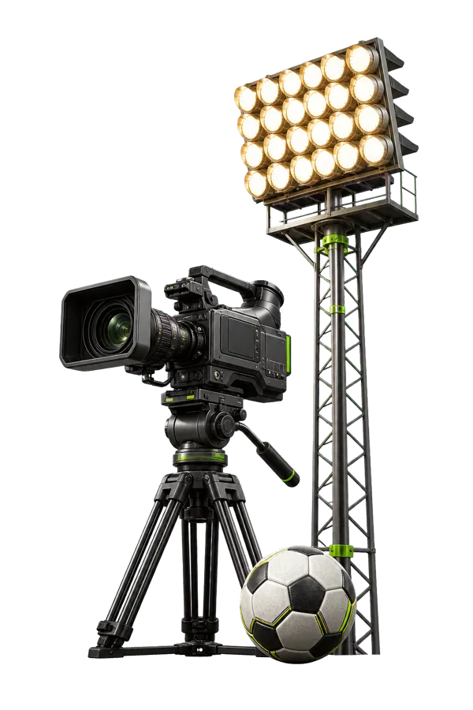

Футбол. Реакции. Подкаст.
D.I.S Подкаст
Млад футболен медиен проект с ревюта, подкасти, лайвове и кратки видеа за Instagram, TikTok, YouTube и Facebook.
Активни партньори
YouTube
Последното видео в центъра на вниманието.
Най-актуалният YouTube акцент от канала, поставен директно в страницата за бързо гледане и лесно споделяне.
Формати

Още от D.I.S
Влез по-дълбоко в играта.
Гласувай, запознай се с водещите, следи новините или разгледай възможностите за партньорство.
Контакт
Имаш въпрос, идея или предложение?
Изпрати го чрез контактната форма и екипът ще го види директно в админ панела.
Свържи се с D.I.S
Канали
Последвай D.I.S Подкаст там, където гледаш футбол.